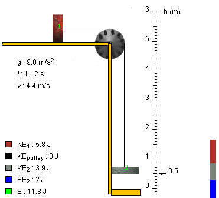

Yes, the magnitude of the acceleration of the blocks is 3.9 m/s2.
Solution
Plan It. The mechanical energy E of the system (defined below) is conserved because there is no dissipative friction in the system. We can use this conservation law to find the square of the speed of the blocks at a given instant in terms of the displacement of the blocks up to that instant. Then we can use the standard kinematic relation, valid for motions with constant acceleration, between the change in the square of the speed, the displacement, and the acceleration to find the acceleration.
Set It Up. We need to define the system to which we want to apply energy conservation. We take it to consist of the two blocks, the pulley, the string, and the earth.
The pulley and string are assumed to be massless, and they therefore have zero kinetic energy. Thus, the total kinetic energy KE is equal to the sum of the kinetic energies of just the two blocks,
KE = (m1/2) v2 + (m2/2) v2.
The gravitational potential energy PE of the pair consisting of the earth and block 2 is
PE = m2gh
if we take the potential energy to be zero when the block makes contact with the platform. (Here, the elevation h is the height above the platform.) The potential energy of the pair consisting of block 1 and the earth remains constant because block 1 moves horizontally so that this potential energy does not need to be entered into the expression for the mechanical energy of the system. Thus, we have the following expression for the mechanical energy of the system:
E = KE + PE = (m1/2) v2 + (m2/2) v2 + m2gh.
We also need the kinematic relation for motions with constant acceleration along a y-axis:
vf2 - vi2 = 2 ay(yf - yi).
Let us define the y-axis to be pointing vertically downward. Then, since ay is positive in our situation, it is equal to a where a is the common magnitude of the acceleration of both blocks. With that substitution, the preceding equation becomes
vf2 - vi2 = 2 a(yf - yi).
Solve It. Equating the initial and final mechanical energies gives
(m1/2) vi2 + (m2/2) vi2 + m2ghi = (m1/2) vf2 + (m2/2) vf2 + m2ghf.
This equation can be rearranged to
[(m1+m2)/2] (vf2 - vi2) = m2g(hi - hf).
whencevf2 - vi2 = 2 [m2/(m1+m2)]g(hi - hf).
Now note that, since the y-axis is pointing downward,
hi - hf = yf - yi.
Thus,vf2 - vi2 = 2 [m2/(m1+m2)] g (yf - yi).
Comparing the last equation with the kinematic relation from the Set-It-Up section, we can identify the acceleration as
a = [m2/(m1+m2)] g.
Substituting the given mass values, we find for the magnitude of the acceleration the value
a = [0.4/(0.6+0.4)] x 9.8 = 3.9 m/s2.
Think About It